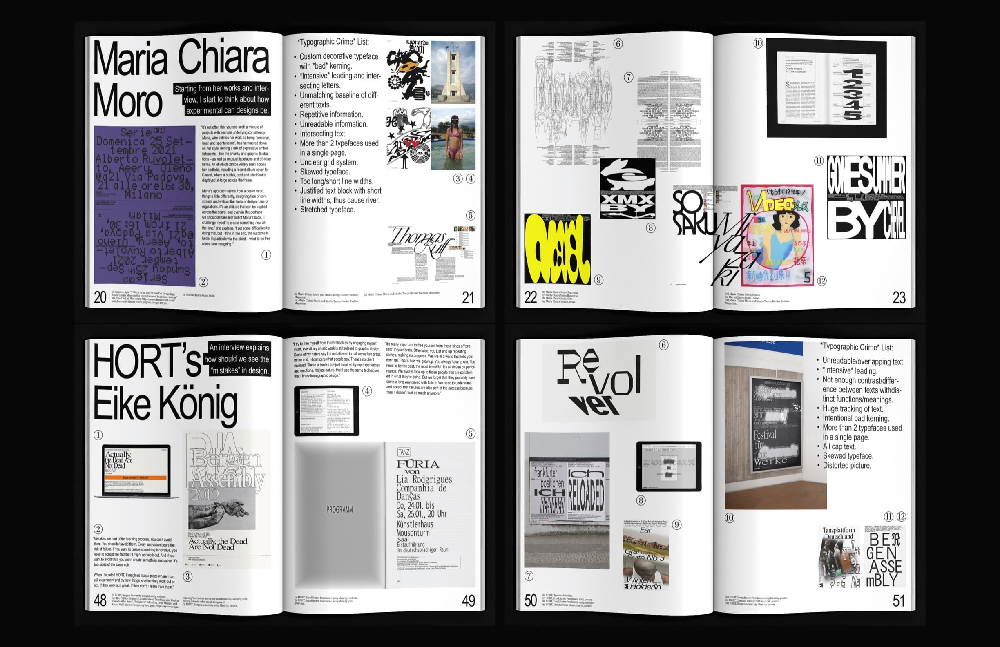
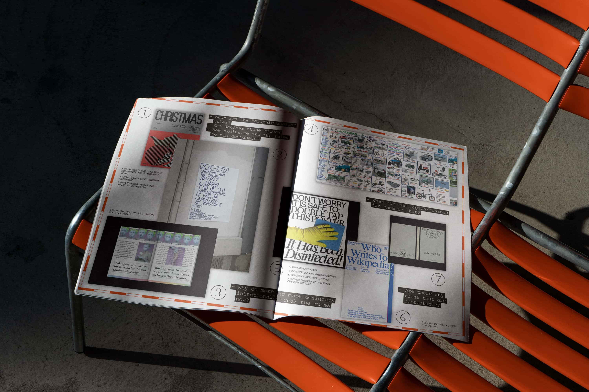
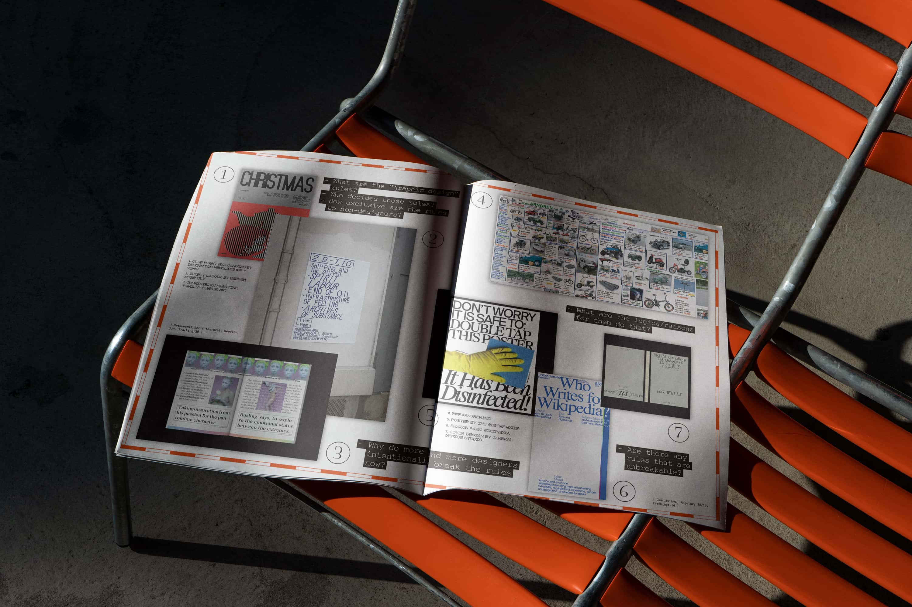

Graphic Design *Jail *
Medium & Dimension:
Finishing Date:
Duration:
1920px × 1080px
0'38" Video Trailer &
8.5" × 11" Magazine &
18" × 24" Poster Set &
Responsive Web Design &
8.5" × 11" Newsprint
2023.5
14 Weeks
In this project, I explore the concept of "Graphic Design Jail" as a representation of the restrictions imposed by traditional design rules. After years of learning and understanding the principles of good design, I realized the impact of rigid guidelines on creative expression. My interactions with an artist friend led me to question the standards of right and wrong in design, as she became apprehensive about her work due to a fear of being "wrong." This prompted me to reflect on the exclusivity of graphic design rules and whether they should remain inaccessible to non-designers. In this project, I aim to uncover and acknowledge these rules, while empowering individuals to make their own design choices. Additionally, I will push my own boundaries by exploring unconventional and "illegal" designs that can still be effective.
Website Project↗



 
